REVUE MÉTHODE
http://revuemethode.org
Merci pour votre message !
Le 9 juin dernier, le Cercle historique des anciens Sous-officiers d’Ourthe-Amblève a organisé, avec le soutien de l’administration communale, sa manifestation commémorative annuelle en l’honneur des agents parachutistes du S.O.E., des agents du S.A.R. et des résistants du 4e Régiment des Partisans Armés qui combattirent notamment sur le site des carrières souterraines de Géromont (Comblain-au-Pont1), haut lieu de la résistance à la barbarie nazie...
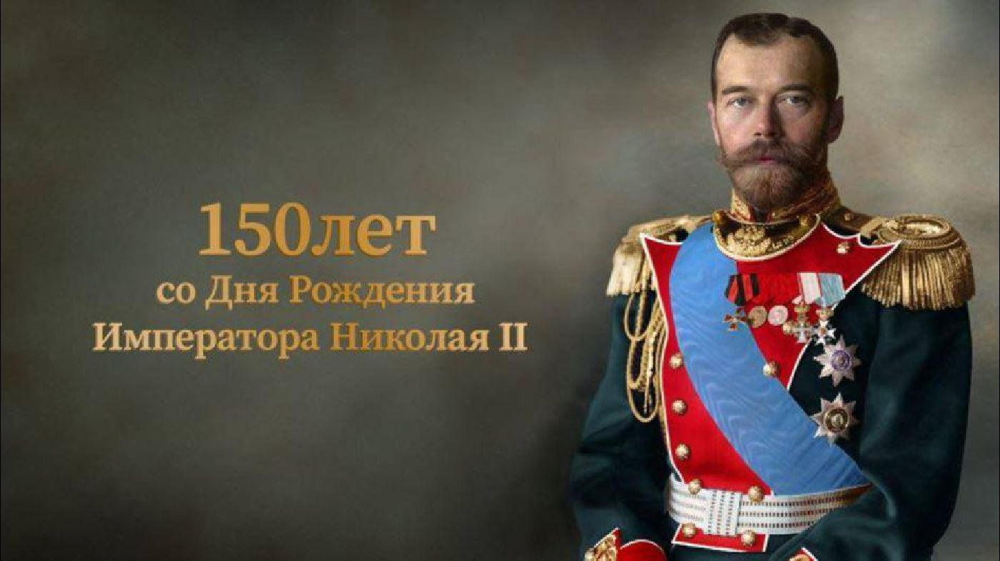
Les festivités du centenaire de la mort de la famille impériale ont officiellement débuté en Russie...
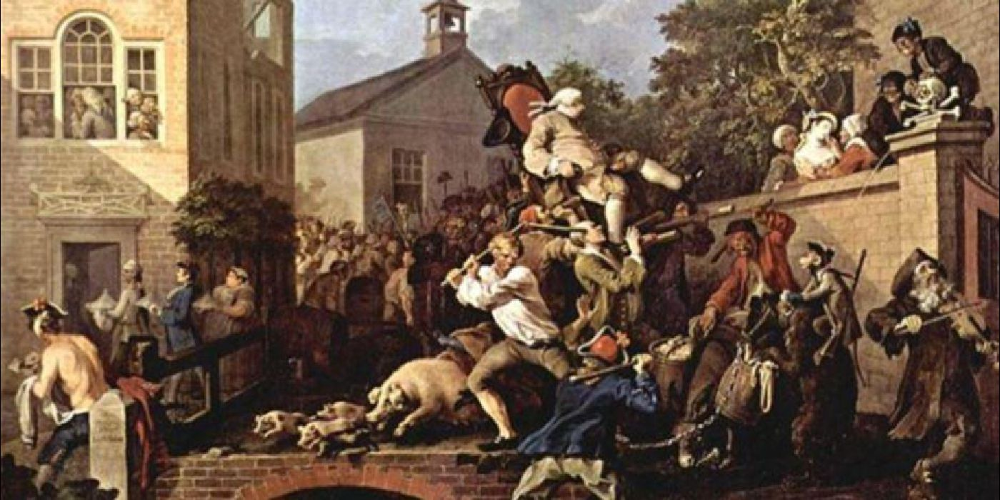
Augustin Cochin a été redécouvert par François Furet dans son magnifique et audacieux livre Penser la révolution française, chef d’œuvre resté sans lendemain. Cochin lui-même s’est opposé à la théorie du complot, mais le sorbonnard Daniel Mornet l’accusa quand même de tous les maux...
Malgré de multiples pérégrinations sur le plateau du Serpent à Djibouti sur celui du Marabout et au centre-ville où je suis tombé, certes, sur la rue de Londres, non loin de la rue de Marseille et de celle de Berne, force est de constater qu’il semble bien ne pas avoir de rue Albert Londres à Djibouti...
Nous avons fêté, les 8 et 9 mai, le 70e anniversaire de la fin de la Seconde Guerre mondiale qui a coûté la vie à plus de 60 millions de personnes...
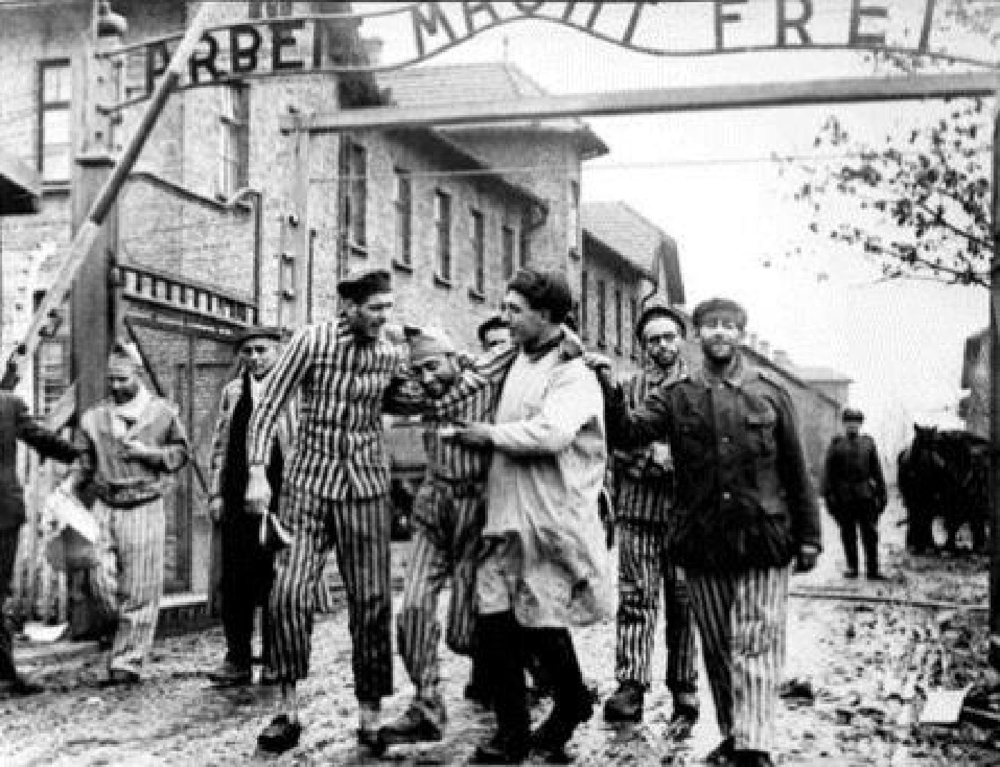
Résistant, Raphaël Feigelson été arrêté à Toulouse, puis déporté à Auschwitz...
Durant le mois d’avril dernier, ont été publié dans plusieurs numéros du journal national djiboutien « La Nation » des articles concernant une littérature que l’on pourrait appeler coloniale parce qu’écrite des années vingt aux années soixante, par des auteurs occidentaux, en français et diffusant le point de vue « des Blancs ». La société djiboutienne évoluait au fil du temps sans qu’un Djiboutien réponde avec assurance et se fasse entendre, ne maîtrisant peut-être pas encore suffisamment la langue française...
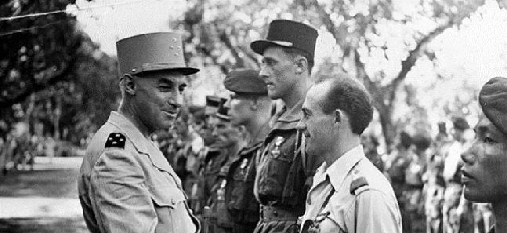
« L’Histoire brûle les hommes. Après, il faut recueillir les cendres et raconter »
(Commandant Hélie Denoix de Saint-Marc –
« Les champs de braises »)...
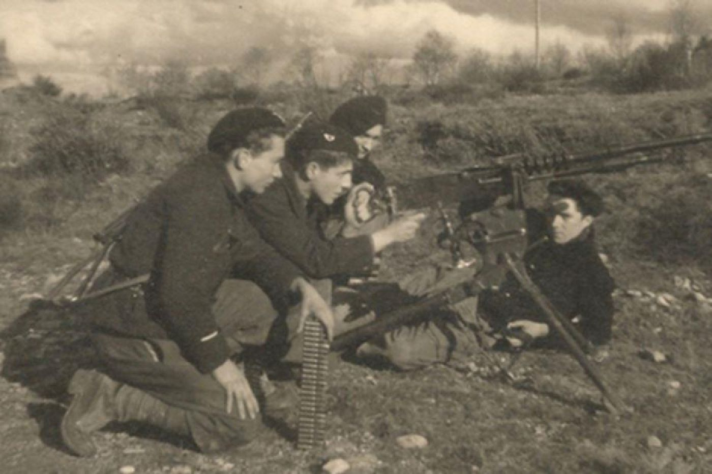
Normandie-Niemen… Résistance… Fraternité des peuples français et russe… Tant de mots qui font battre les cœurs des patriotes français et russes...
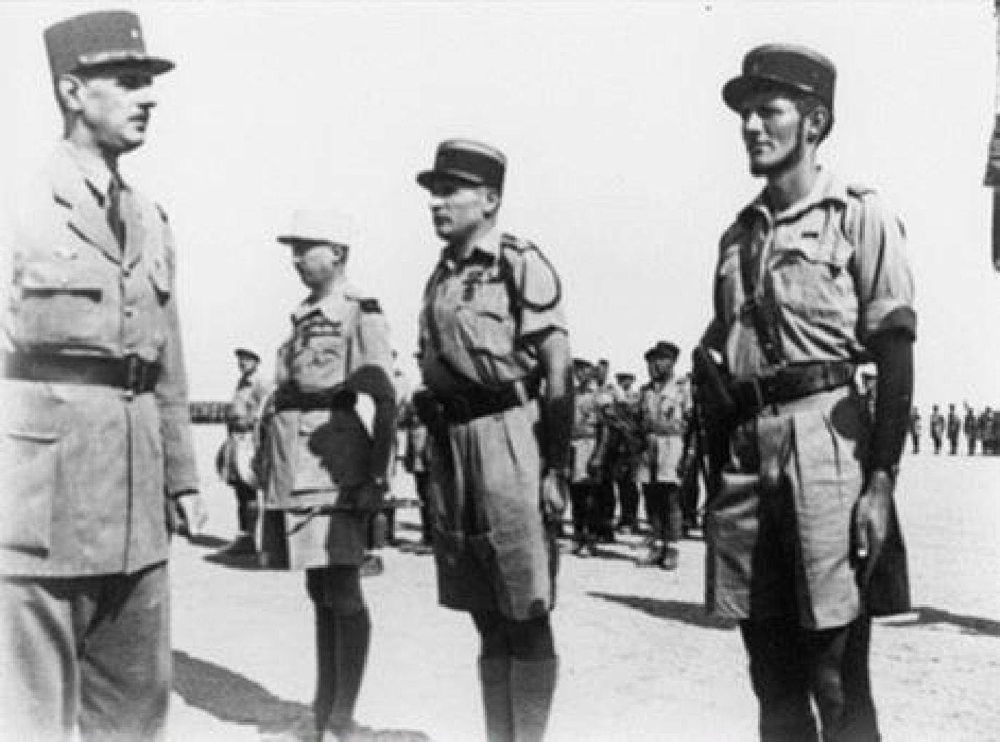
En 1926, la Légion étrangère compte, parmi tant d’officiers prestigieux, un ancien Saint-Cyrien de trente ans que tout promet à une carrière exceptionnelle. A condition qu’il devienne français, car il sert à titre étranger : la révolution russe l’a chassé de son pays à l’âge de 11 ans...
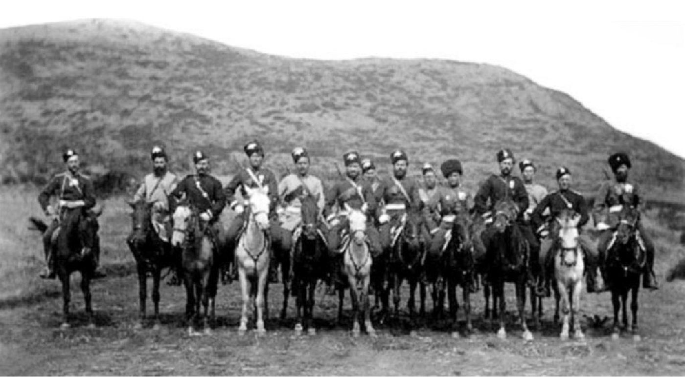
La localité de Sagallou (Sagallo) sur le golfe de Tadjourah a pendant très longtemps revêtu une importance particulière dans l’histoire de la région...
L'intervention des Forces Armées Canadiennes, 23 000 militaires, durant les Olympiques à Montréal en 1976, pour s'assurer que les Québécois ne se révoltent pas contre la visite de la reine Elizabeth II...
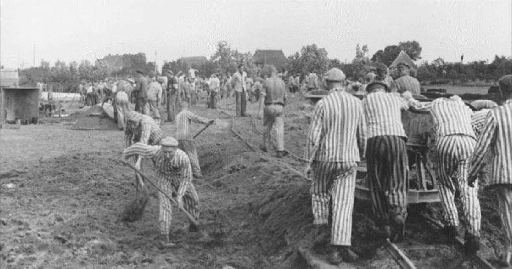
Israël et Juifs vent debout contre la nouvelle loi mémorielle en Pologne...
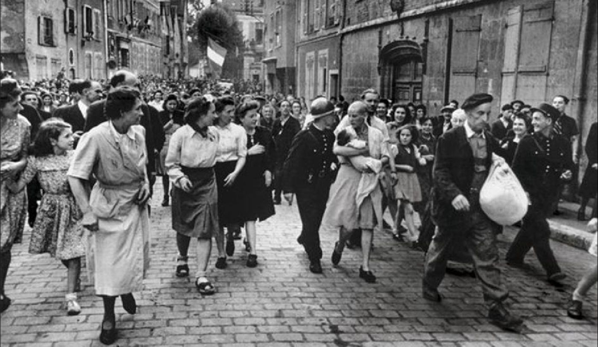
« Il y a deux histoires, l’une que l’on enseigne et qui ment, l’autre que l’on tait parce qu’elle recèle l’inavouable »
(Honoré de Balzac)...
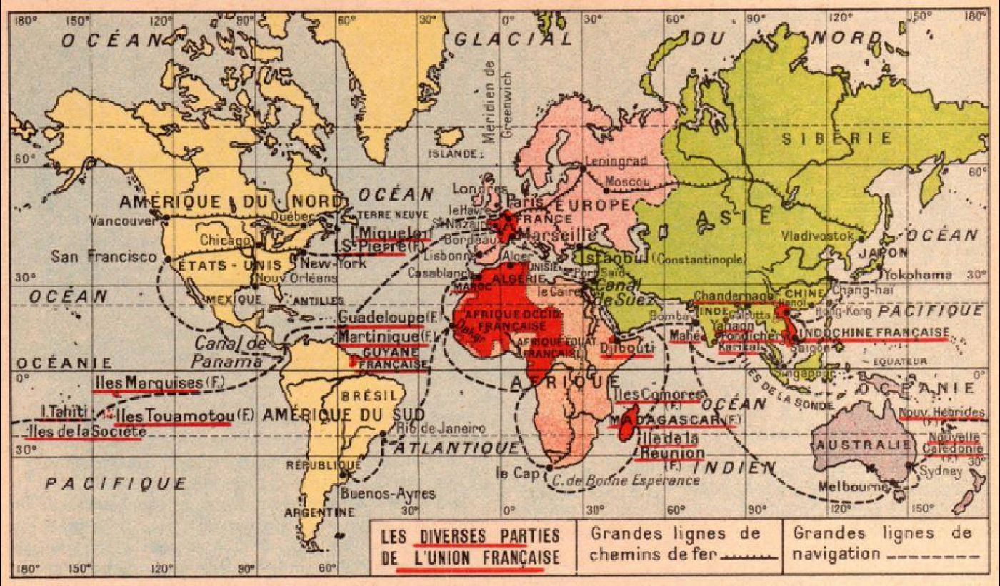
Le 27 juin 2017 la République de Djibouti a célébrée dans l’allégresse le 40ème anniversaire de son indépendance...
Les relations entre la France et la Russie ne sont pas bonnes aujourd’hui. En témoigne, et ce n’est que l’un des indicateurs, la baisse de la part de la France dans le commerce extérieur de la Russie qui est passée de 3,87 % à 2,44 % et de la 10ème à la 14ème place...
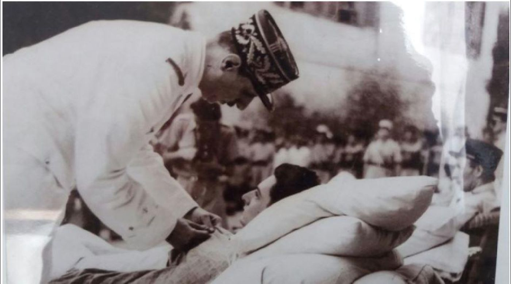
Le mardi 10 avril 2018, les honneurs militaires ont été rendus dans la cour d’honneur des Invalides à l’un des huit derniers Compagnons de la Libération...
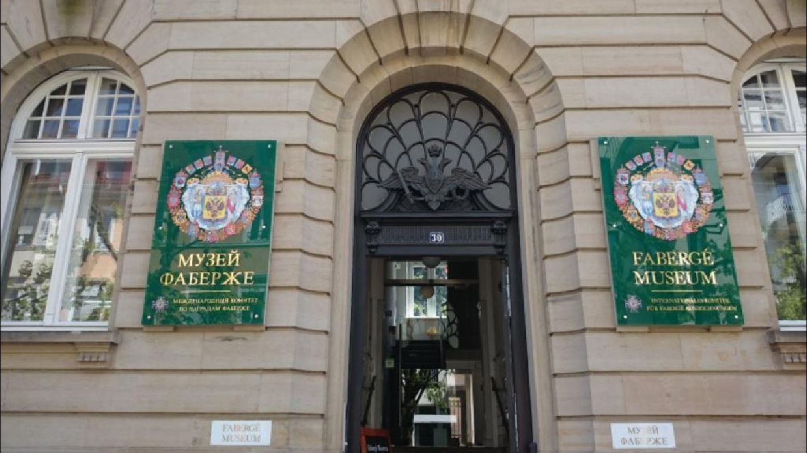
Baden-Baden1 est une ville moyenne allemande de plus de 50 000 habitants au cœur de la Forêt-Noire. Située dans le Land de Bade-Wurtemberg, à proximité de la frontière française, la cité badoise est mondialement connue pour son casino et comme centre de villégiature des plus grosses fortunes allemandes...
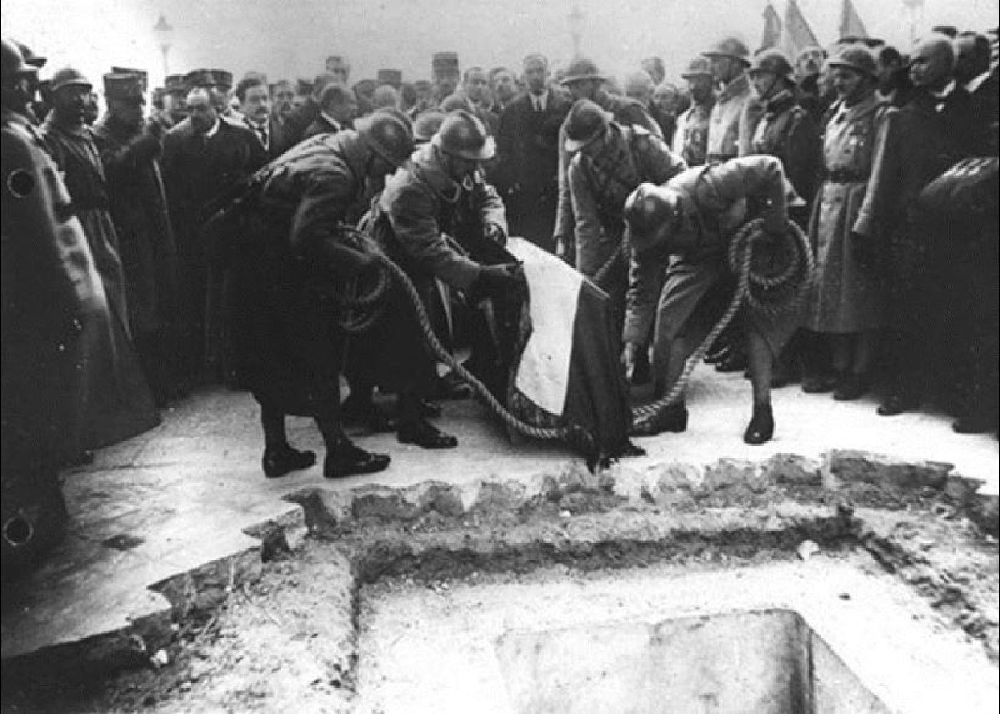
L’histoire commence en 1862 lors de la guerre de Sécession. Alors que l’unité de l’Armée de l’Union du capitaine Robert Ellicombe se trouvait près de Harrison’s Landing en Virginie. De l’autre côté de cette étroite bordure de terre se tenait l’Armée de la Confédération...
C’est une imposante tour génoise, bien connue de ceux qui aiment la Corse. Restaurée depuis quelques années, elle accueille les visiteurs en été, avec une petite exposition fort bien faite à l’intérieur…
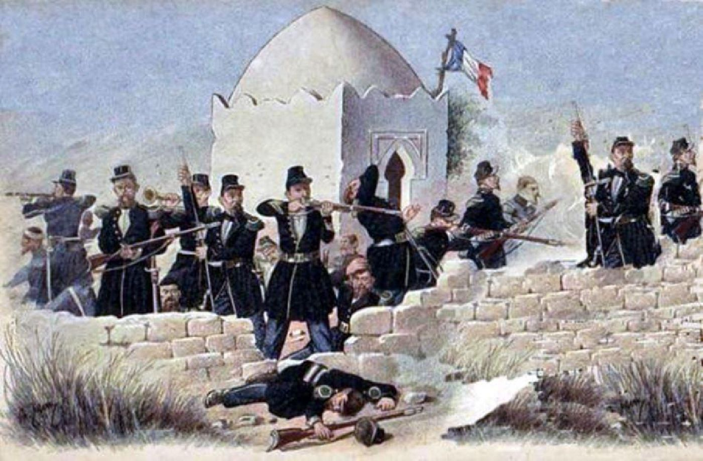
« La seule défaite irréparable, c’est l’oubli »
(Jean BRUNE)
Après la destruction de sa smala (16 mai 1843) par le duc d’Aumale, l’émir Abd el-Kader se réfugia au Maroc d’où il lança un nouvel appel à la guerre sainte contre les troupes françaises installées en Algérie...
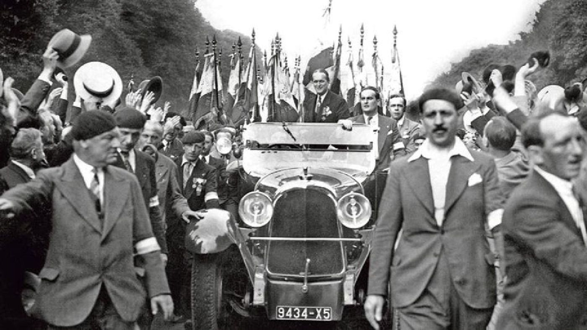
Les philosophes ont toujours cherché à savoir si la guerre est consubstantielle à la nature humaine, c’est-à-dire si l’homme choisit la guerre ou bien si elle est inscrite dans ses gènes, sa culture, sa raison…
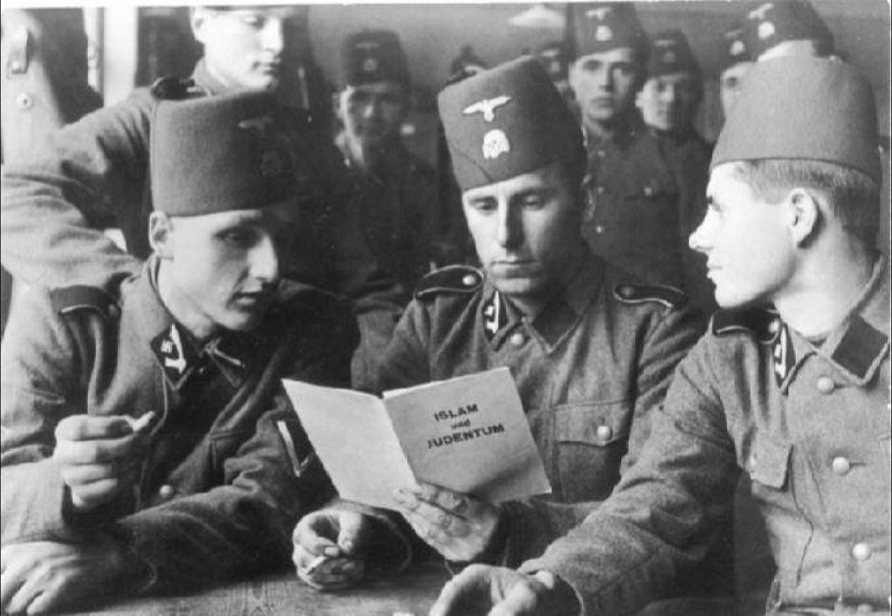
« L’histoire est écrite par les vainqueurs » a-t-on coutume de dire. Il serait plus juste de dire qu’elle est souvent écrite par des personnes qui, se réclamant des vainqueurs, utilisent partialement des faits historiques passés pour justifier, cautionner ou mettre en valeur leurs actions présentes sous couvert du « devoir de mémoire »...
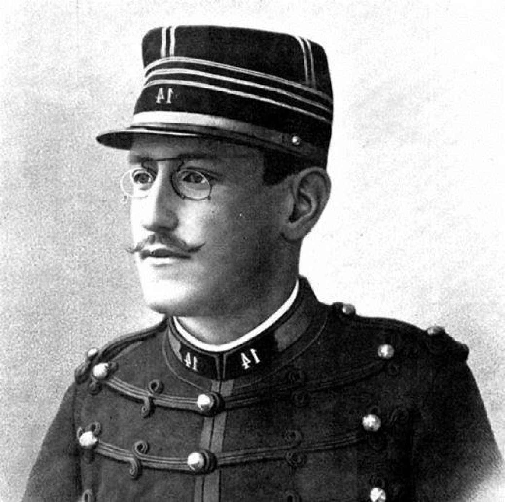
On connaît l’usage intempestif que fait de l’affaire Dreyfus la maréchaussée médiatique et francophobe ?
Israël Shamir, écrivain juif anti-sioniste, de grande culture, et de subtilité unique, cite un historien anglais et culotté nommé Piers Read...
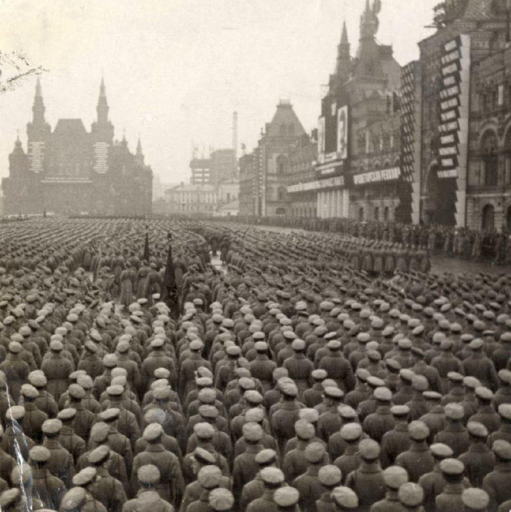
À l’occasion du centenaire de la Révolution d’Octobre 1917, nous avons l’intention de poser la même série de questions à des personnalités de Moldavie, Roumanie, Russie et de pays occidentaux. Ces entretiens ont pour but de représenter une modeste contribution à la réévaluation des événements qui ont marqué le XXe siècle...
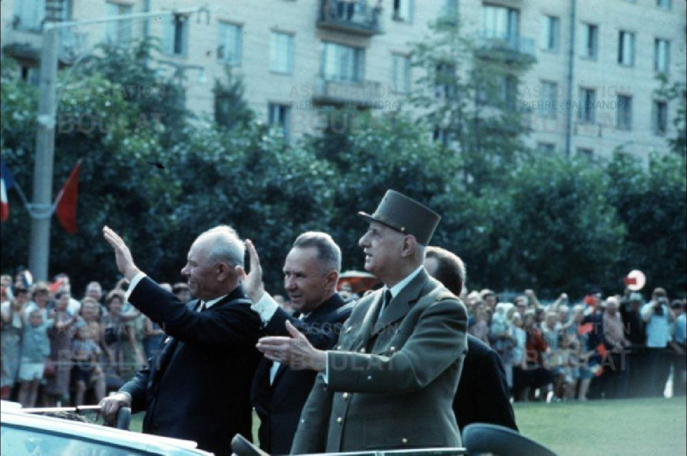
De Gaulle est l'un des rares chefs d'État à avoir rencontré les trois dirigeants de l'URSS que furent Staline, Krouchev et Brejnev. C'est ce que Hélène Carrère d'Encausse disait dans l'émission « Spéciale Russie » diffusée récemment sur la chaîne Histoire dans le cadre du magazine « l'Histoire en marche » Durant cette émission qui coïncidait avec la parution de son ouvrage « De Gaulle et la Russie » elle donne un éclairage très intéressant sur ce que de Gaulle pensait des rapports entre la France et la Russie...
Cette question divise toujours les historiens comme les monarchistes eux-mêmes quand elle n’est pas niée par les plus gaullistes de nos républicains. La France aurait-elle pu connaître le même destin royal que l’Espagne...
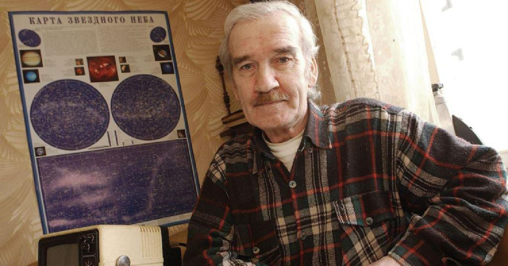
« Des esprits de démons, qui font des prodiges, [...] vont vers les rois de toute la terre, afin de les rassembler pour le combat du grand jour du Dieu tout-puissant. [...] dans le lieu appelé en hébreu Harmaguédon. (Apocalypse 16:13) »...
Il va sans dire que, dans le réseau d’obligations mutuelles qui régit le monde féodal, certains seigneurs manquent parfois à leurs devoirs, et abusent de leur force et de leur pouvoir pour opprimer leurs sujets ou rançonner les voyageurs...
Les philosophes grecs récusaient l’intérêt qui ne représentait que celui d’un groupe, auquel tous les autres devaient se plier...
Contrairement à d’autres pays occidentaux où il est une force pérenne, le conservatisme est, en France, un ovni politique difficilement identifiable...
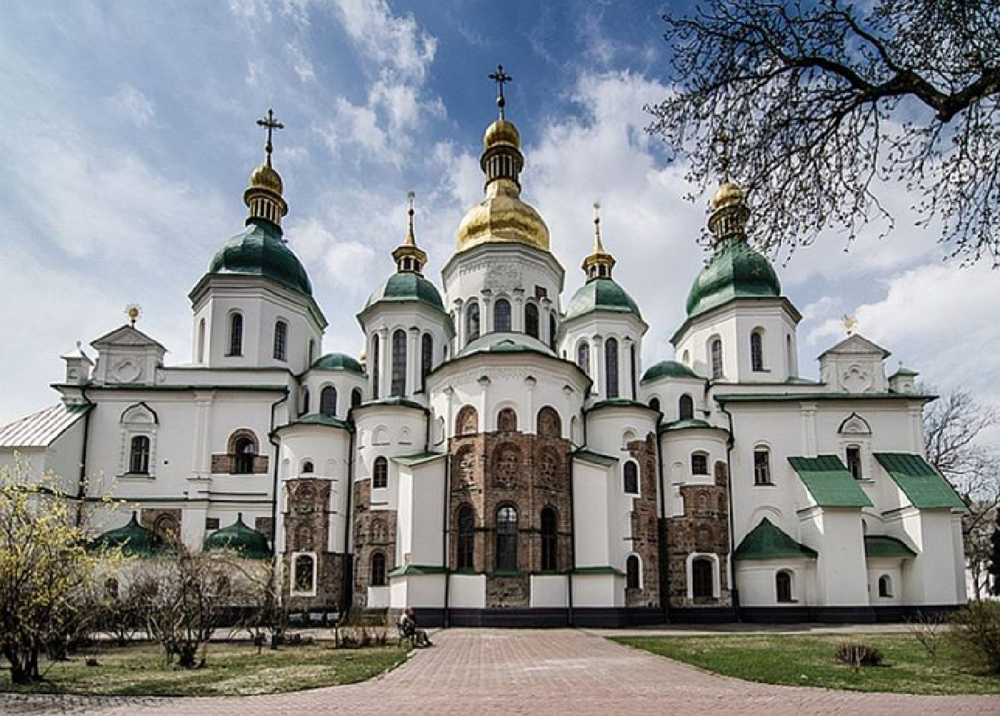
A l’heure où notre revue « SANS FRONTIERES » se nomme désormais « METHODE », nous devons rappeler et mettre en évidence que Saint Cyrille et Méthode firent énormément pour les peuples slaves et la Russie, en développant en Moravie, l’alphabet glagolitique, utilisé pour diffuser le Christianisme...
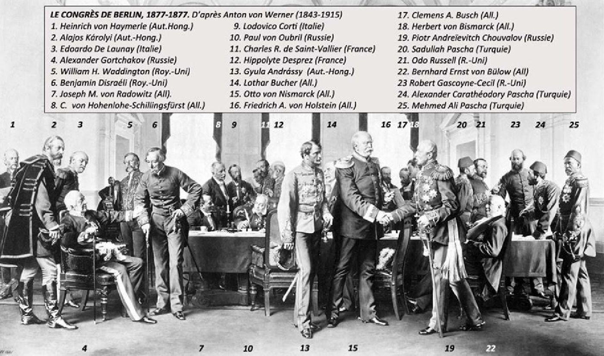
Novembre 1885, les nations du vieux continent se réunissent autour d’une table pour décider du sort et du partage de l’Afrique. Près d’un siècle plus tard, d’autres États se rencontrent aussi à leur tour pour décider de la restitution des pays africains à ses véritables fils, comme pour montrer que le respect et la dignité ne se demandent pas mais s’arrachent...
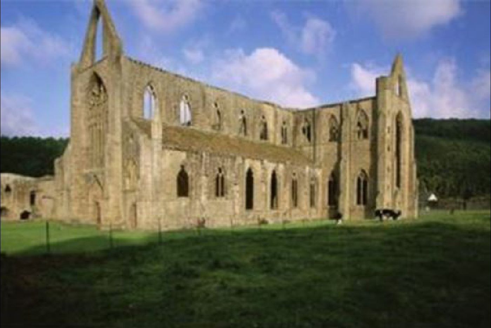
Lorsque le président français, Emmanuel Macron, reçut château de Versailles, le 29 mai 2017, son homologue russe, Vladimir Poutine, ceux-ci n'hésitèrent à en appeler à l'histoire. Emmanuel Macron se référa à Pierre le Grand et son ouverture sur l'Europe quand Vladimir Poutine fit allusion à Anne de Kiev, contributrice de la dynastie capétienne et par la même occasion des deux maisons devenues plus tard européennes, la maison des Valois et la maison des Bourbon...
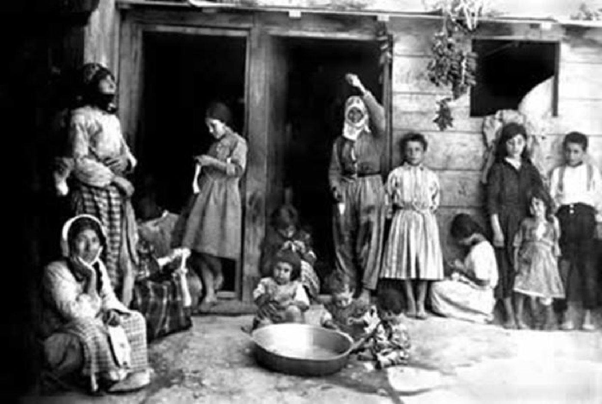
Nouvelle écrite en 1995 en arabe et traduite en arménien et publiée dans plusieurs journaux et revues en Syrie, au Liban et aux E.U, et que j’ai décidé de traduire en français pour le centième et triste anniversaire de ce génocide. Ce récit a été écrit en 1995 en arabe, traduit en arménien et publié dans plusieurs journaux et revues en Syrie, au Liban et aux États-Unis. Vingt ans après, l’auteur, un médecin d’Alep qui vit aujourd’hui au Canada, a décidé de le traduire en français pour le centième anniversaire du génocide des Arméniens.
Vigile publiait il y a quelques semaines les révélations extraordinaires du journaliste Pierre Schneider sur les circonstances très suspectes du décès de l’ancien premier ministre Daniel Johnson père, survenu le 28 septembre 1968 à Manic-5...
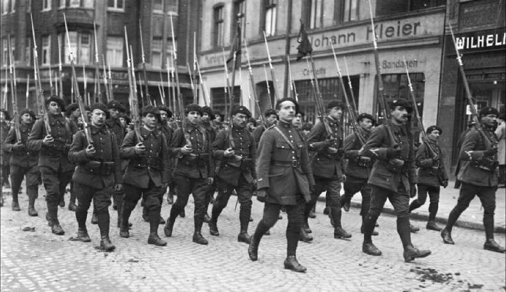
Le 11 novembre 1918 à 6 heures du matin, les généraux allemands signent l'Armistice avec les Alliés. Dans un wagon-restaurant, près de la gare de Rethondes dans l'Oise aménagé en salle de réunion, l'amiral Wemyss, le maréchal Foch et le général Maxime Weygand mettront fin à quatre ans de guerre...
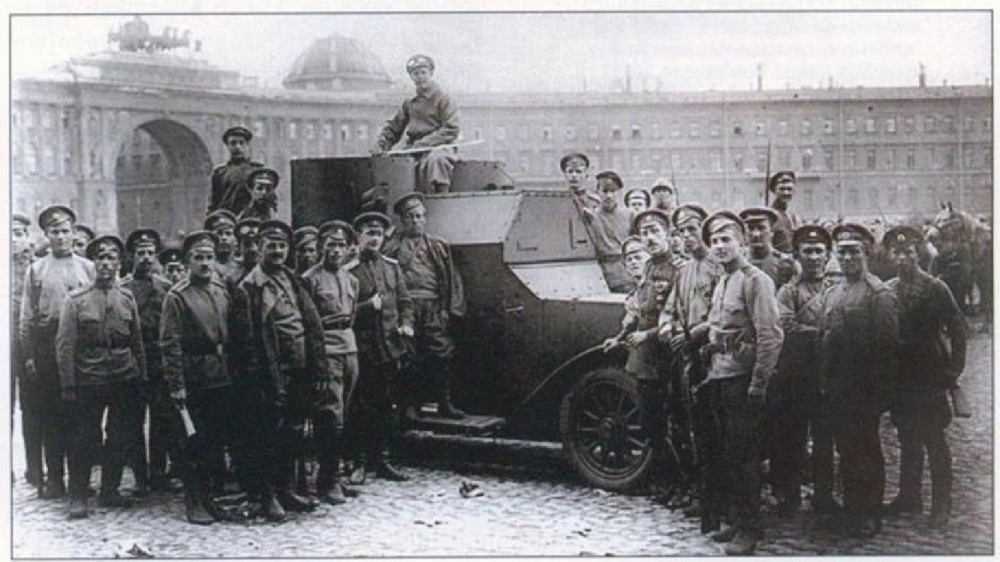
Progressivement, la Russie prend conscience qu’elle est le dernier rempart dans la lutte mortelle contre les valeurs morbides de l’Occident...
Alors que les différents régiments de la république et de l’empire colonial français achevaient de défiler le long de l’avenue des Champs-Elysées à Paris, devant le général Charles de Gaulle et le président René Coty, ces derniers sont avertis qu’un événement tragique vient de se produire au Moyen-Orient...
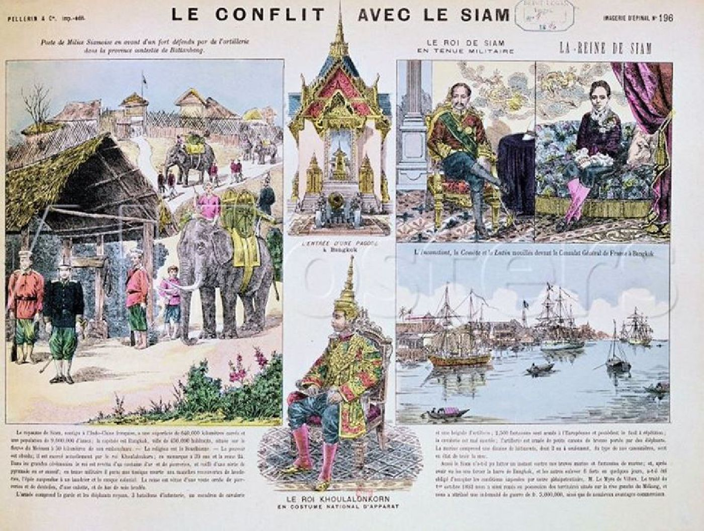
On se souvient, qu’avant de s’appeler Thaïlande, ce pays s’appelait Siam. C’était, bien sûr, avant 1939...
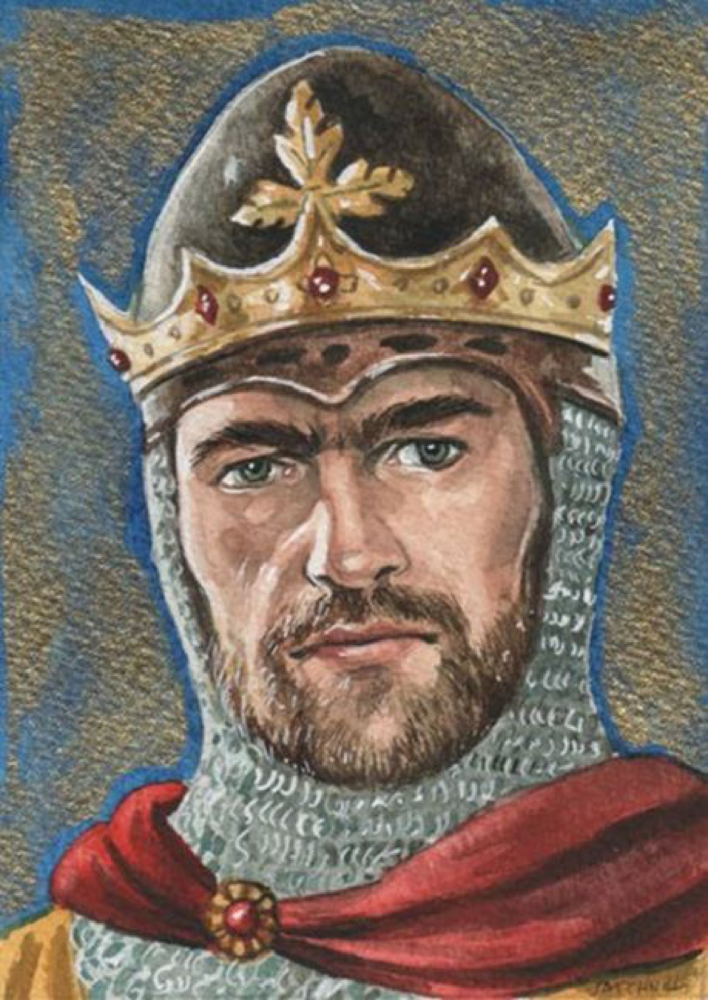
« Tant que cent de nous resteront en vie, jamais sous aucunes conditions nous nous soumettrons au joug anglais. Ce n'est pas pour la gloire, ni pour la richesse, ni pour les honneurs que nous nous battons, mais pour la liberté — uniquement pour elle, qu'aucun homme honnête ne cède, ne fusse qu'au prix de sa propre vie. »...
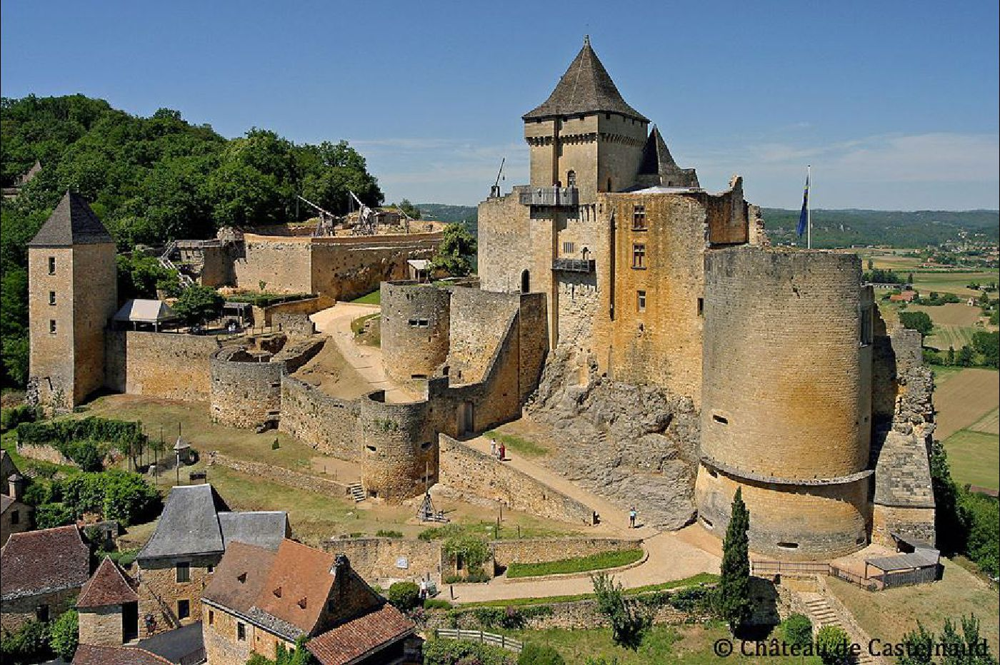
On pourrait croire que grand conflit qui opposa les rois de France et d’Angleterre entre 1337 et 1453 est connu dans ses moindres détails...
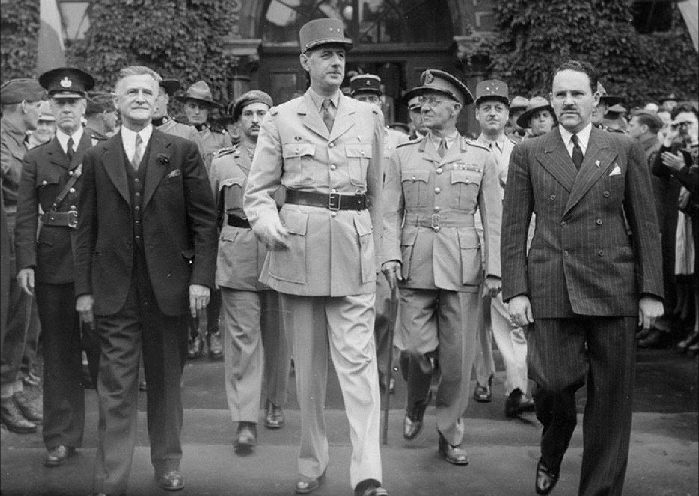
Des liens si forts qu’ils ont résisté, et continuent de le faire, au passage du temps et à l’adversité…
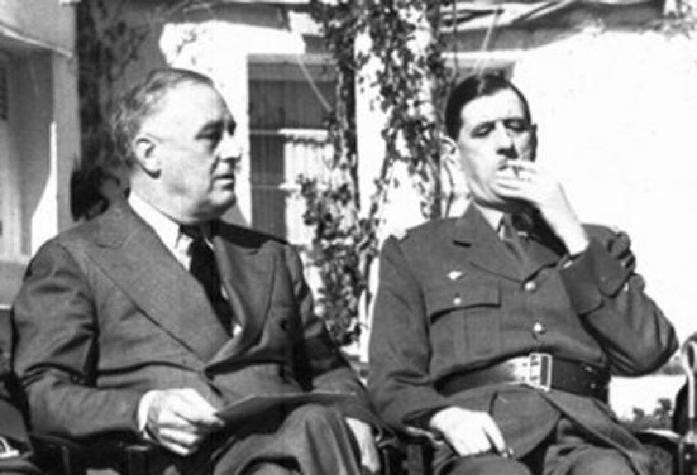
Dans l’histoire du Gaullisme, il y a des événements plus ou moins connus, d’autres anecdotiques...
De quoi De Gaulle est-il aujourd’hui le nom ? Celui d’une occultation assourdissante.
Plus on commémore le grand homme – invoqué comme un mort illustre, enfoui sous les trémolos – plus on cherche à étouffer, sans y parvenir, la clameur du Politique...
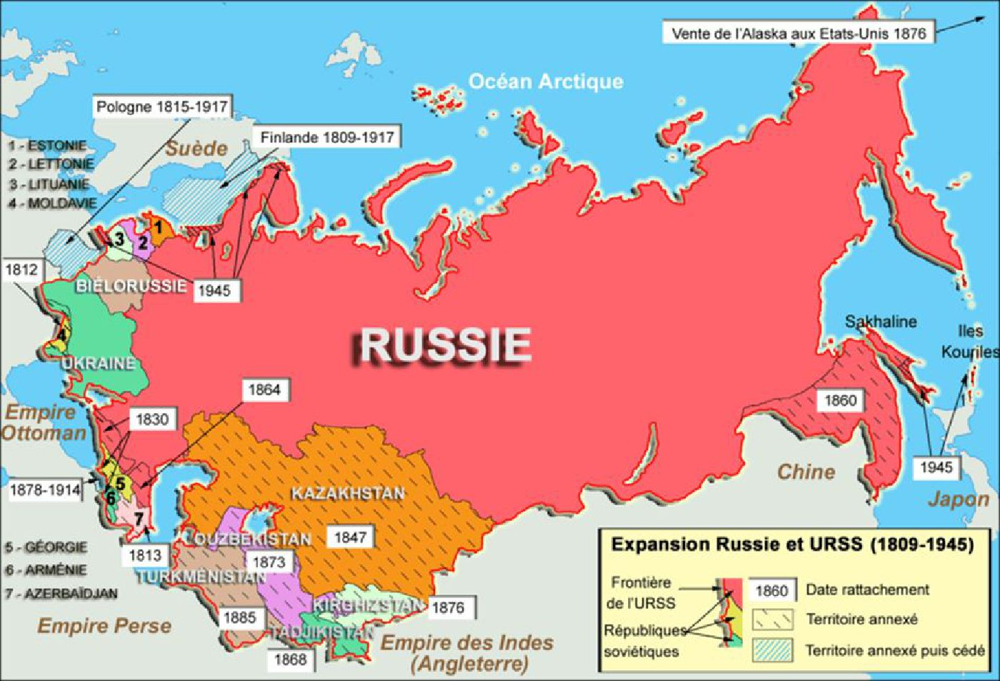
DE L’EMPIRE DES TSARS …
Le continent eurasiatique apparaissait comme une plaine sans fin, fermée au Nord par l’Arctique et au sud par une série de grand lacs et de chaines de montagnes ces caractéristiques géographiques expliqueront deux constantes de la politique extérieure et de défense des autocrates qui gouverneront la Russie : une hantise de sécurité face aux puissances de l’Europe centrale, puis ultérieurement dans l’extrême sud-est, face à la Chine d’abord au Japon ensuite en l’absence d’une frontière naturelle, une voie d’accès aux mers libres et chaudes, avec un effort prononcé en direction de la méditerrané, via le Bosphore et ultérieurement vers l’Océan Indien...
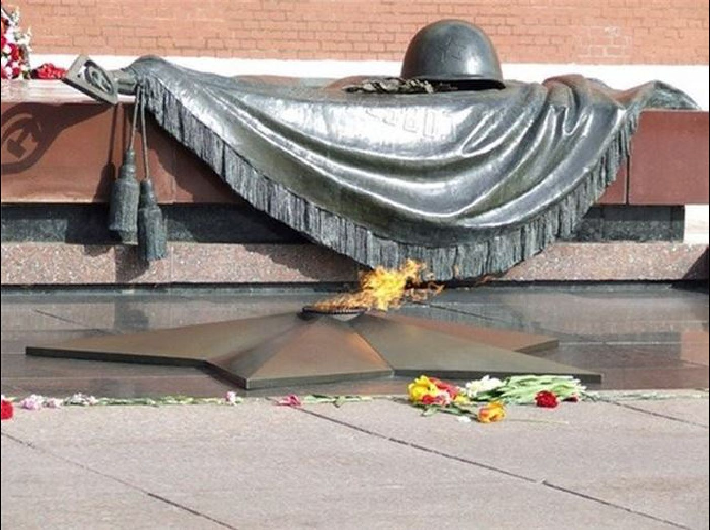
Il y a 50 ans, le 8 mai 1967, près du mur du Kremlin, sur la tombe du Soldat inconnu, on a mis la Flamme éternelle dans la mémoire des héros tombés pendant la Grande Guerre Patriotique...
5/ LES VRAIS ISRAÉLITES
Les israélites ne sont donc pas issus de la famille d’Abraham à qui Dieu aurait conjointement promis une descendance et une terre...
Le 21 décembre 1963, un mois après un inopiné accident de voiture, l’ex-président Truman, célèbre pour sa doctrine éponyme, sa Guerre Froide, sa bombe d’Hiroshima, sa guerre de Corée, sa bombe de Nagasaki, son Otan et autres merveilles rédige une maladroite lettre publiée le matin et censurée le soir-même...
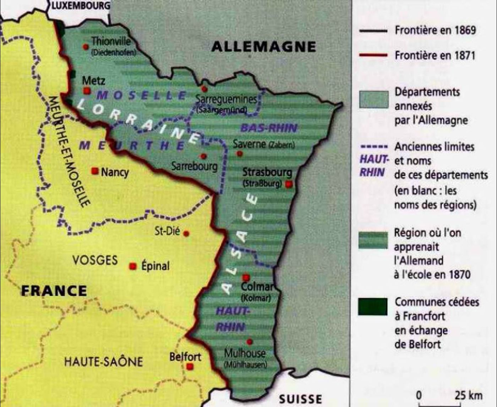
Il y a, nul n’en doute, des particularités dans chaque région de France et pourtant les velléités, de certaines régions, de perdurer dans leur particularisme est, souvent, peu compris par les autres Français...
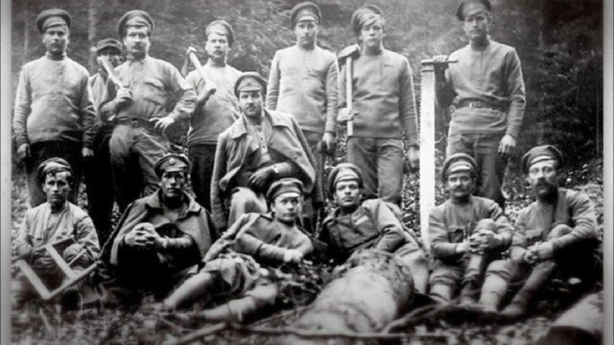
Le mois mars 1917 débute par une assez grande activité des deux artilleries sur le front de part et d'autre de l'Avre. Le froid rigoureux du mois de février est un peu moins meurtrier sur le front occidental mais les combats sur les fronts russes et roumains se déroulent toujours dans des températures extrêmes...
Le 19 juillet 1870, Napoléon III déclare la guerre à la Prusse, à la suite d’un imbroglio diplomatique...
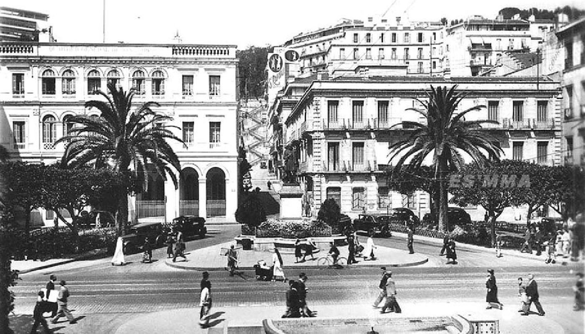
Le dérapage de M. Macron en Algérie n’est pas une anecdote. C’est un fait puissamment révélateur, un fait d’une haute portée symbolique, dans un domaine, la politique, où les symboles sont souvent plus importants que les faits eux-mêmes...
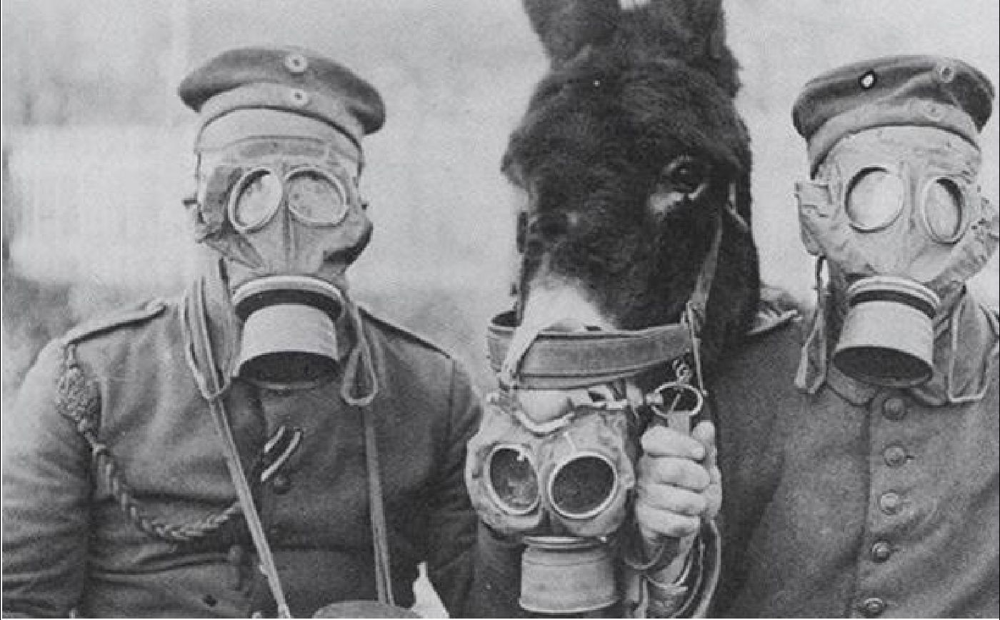
Le 1er février, nos soldats des tranchées supportent des épreuves terribles car, en ce 912ème jour de guerre, le froid (15° au-dessous de 0 à Paris) n'est pas moins mortel que l'obus...
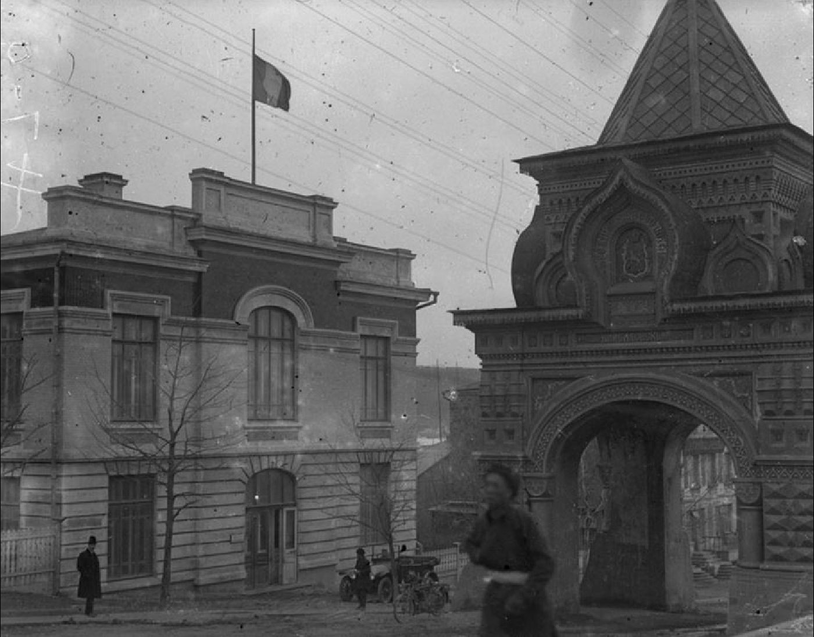
« Le Bataillon colonial sibérien a été constitué, sur ordre du Ministre de la Guerre, le 13 juillet 1918 1»...
En matière de standards de TV-couleur les téléphiles auront remarqué que la France a opté pour le format SECAM, qui est également utilisé en Russie et dans les pays de l’ex Union Soviétique, mais aussi en Amérique du Sud...
La France est trahie aujourd’hui : son patrimoine spirituel et culturel est nié ou profané ; sa population est remplacée et prolétarisée ; son économie est délocalisée ; ses entreprises sont contrôlées par le capital anglo-saxon ; son armée travaille pour les USA ; le pays hébété est contrôlé par une camarilla déchaînée ; les attentats se succèdent dans l’in-explication générale...
Si pour reprendre la vulgate imbécile selon laquelle Vladimir Poutine a fait élire Donald Trump (pourquoi ne pas désigner le changement climatique ?), on va rendre la politesse, mais avec des preuves...
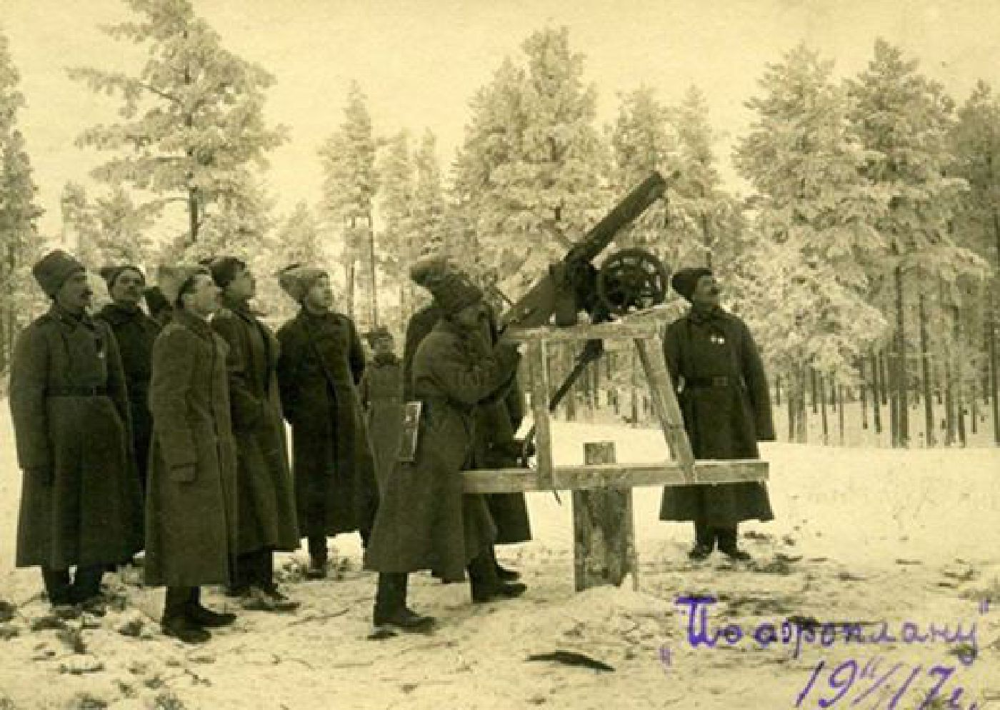
L’hiver 1916-1917 est terriblement froid. Le vin gèle dans les tranchées. Il fait - 25°C. Le ravitaillement arrive mal. De nombreux gelés, surtout aux pieds, sont acheminés vers les hôpitaux de l’arrière...
Lorsque l’on évoque l’Inde, et plus généralement le sous-continent indien, on pense immédiatement à l’Angleterre car peu se souviennent que la France a été présente dans cette partie du Monde pendant des centaines d’années...
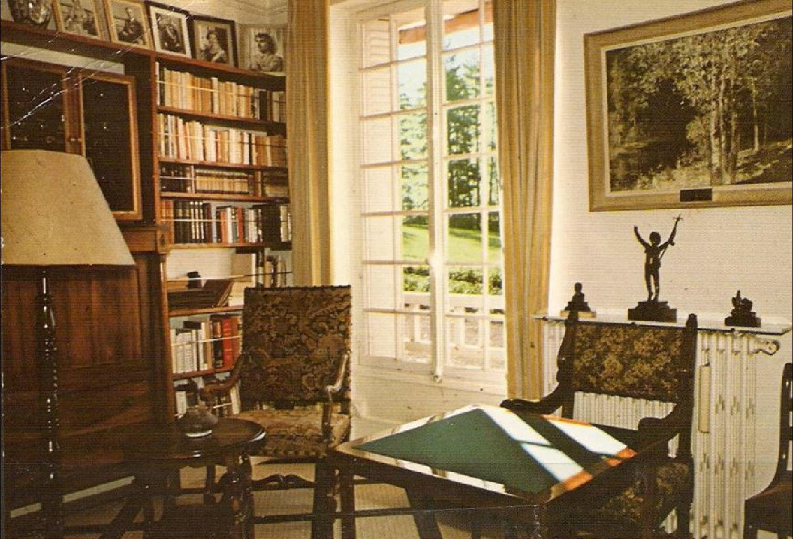
II – LES REFERENCES INTELLECTUELLES ET LES MODELES LITTERAIRES DE DE GAULLE
Si De Gaulle trouve sans conteste sa place dans le milieu intellectuel français et si on peut le situer par rapports aux « grands ancêtres », la question se pose de ce qu’il en a retenu. Quelles sont finalement ses références intellectuelles...
De manière constante le général de Gaulle a toujours lutté pour l’indépendance et la grandeur de la France. Dans ce contexte il a pris ses distances avec les USA et leurs visées hégémoniques. Il a cherché des alliances multiples et objectives notamment en reconnaissant la Chine de Mao dès 1964, mais aussi en signant le traité franco-russe avec Staline dès 1944...
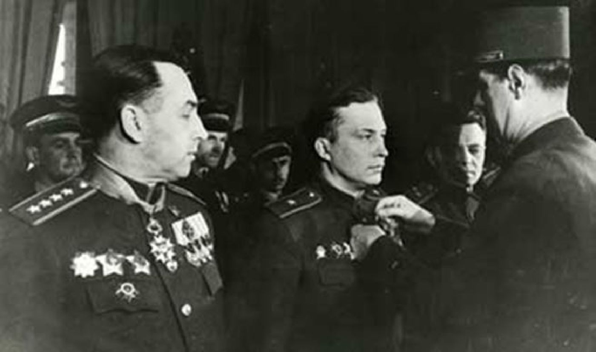
Le voyage de Charles de Gaulle à Moscou est l’un des actes fondateurs qui permet à la France d’occuper une réelle place aux côtés des vainqueurs en 1945...
La France, l’auto-proclamé pays des Droits de l’Homme, mène une politique étrangère à double visage. Cela pourrait relever de l’habileté. On peut malheureusement y voir le signe d’un cruel recul. Certes, nous proclamons, haut et fort, notre souci de protéger les populations et de combattre les dictatures criminelles, le terrorisme et le racisme génocidaire. Notre engagement a toutefois été sélectif et alternatif dans ces domaines...
L’amitié entre Russes et Serbes n’est pas un vain mythe. C’est une réalité spirituelle, culturelle et charnelle que peu de peuples ont réussi à bâtir et ça n’est pas pour rien qu’aujourd’hui encore, malgré les hauts et les bas inhérents à n’importe quelle fratrie, la Serbie regarde la Russie comme son grand frère et que les Russes voient les Serbes comme leurs cadets...
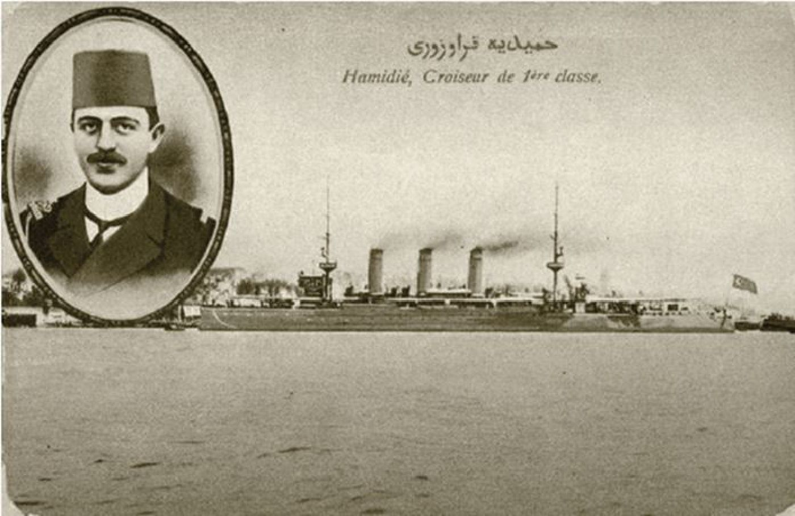
La non livraison de bâtiments de guerre, par le pays les fabriquant à un pays client, a connu, il y a quelques mois, un nouvel épisode avec l’affaire des « Mistral » qui n’était pas sans rappeler l’affaire des vedettes de Cherbourg. En la matière, la France n’est pas la seule à avoir agi de la sorte si on veut bien se souvenir de l’affaire des cuirassés turcs…
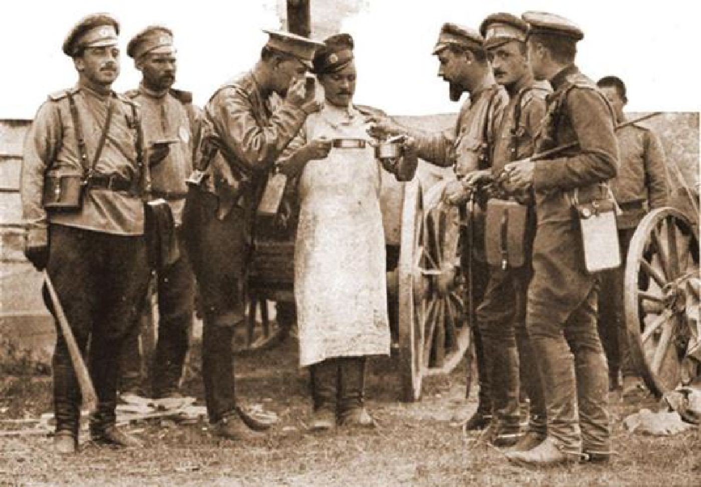
Décembre 1916 est avant tout le mois de la fin de la bataille de Verdun. Symbole du sacrifice et de la résistance de l’Armée française de la Grande Guerre, comme de l’horreur des tranchées, la bataille de Verdun s’achève sur une victoire défensive française. Ce mois de décembre ne sera toutefois pas moins meurtrier que les précédents et débute en ce 853ème jour de guerre…
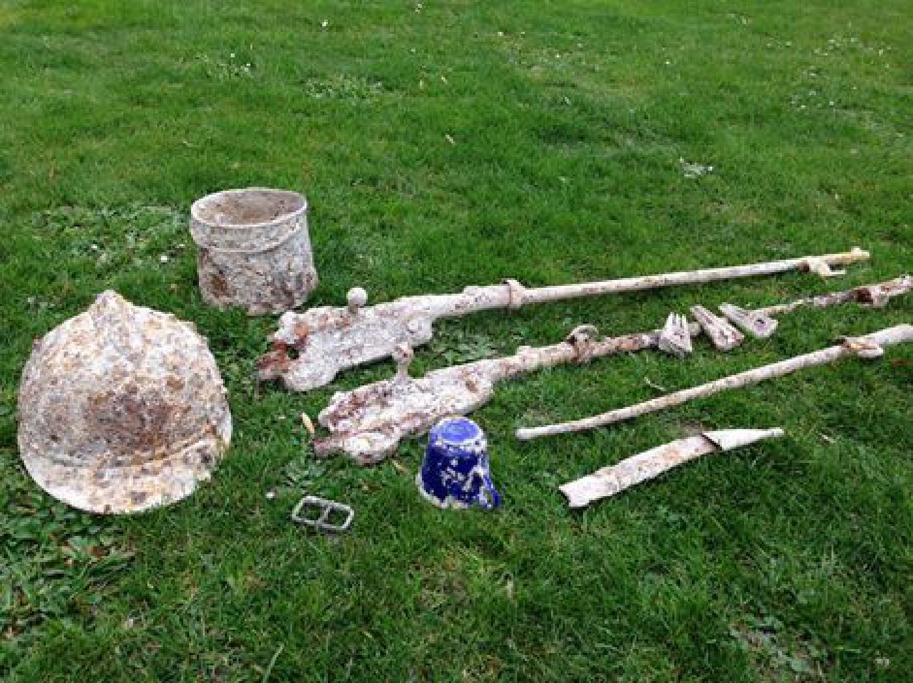
Les Brigades Russes durant l'offensive Nivelle
Il y a cent ans, en pleine Première Guerre mondiale, un accord entre la France et la Russie était signé pour l'envoi de deux brigades volontaires sur notre sol afin de combattre aux côtés des troupes alliées sur le front ouest. Ces deux brigades seront connues sous le nom de « Corps Expéditionnaire Russe »...
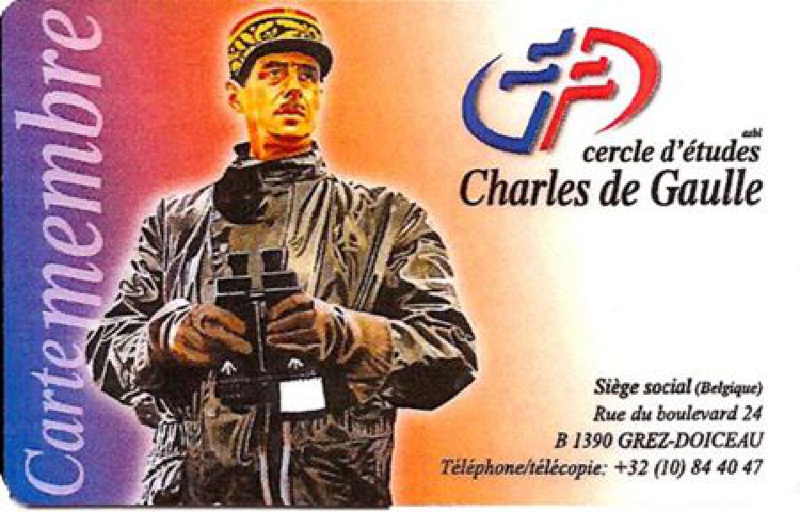
« L'influence et l'action du Cercle d'Études Charles de Gaulle de Belgique exercent depuis des décennies une œuvre historique et morale considérable qui s'étend bien au-delà de la Belgique. »
Amiral Philippe de Gaulle
Membre d'honneur du Cercle d'Études Charles de Gaulle...
A l’occasion du référendum sur la réforme du Sénat et la régionalisation, qui intervenait un an à peine après le désordre social et institutionnel de mai 1968, le général de Gaulle déclarait en avril 1969, que « De la réponse que fera le pays va dépendre évidemment soit la continuation de mon mandat, soit aussitôt mon départ » puis « Si je suis désavoué par une majorité d'entre vous, je cesserai aussitôt d'exercer mes fonctions...
« Il n’y a de querelle qui vaille que d’homme »
Tout un courant de la critique littéraire des années 1960 avançait qu’il n’était pas utile de connaître la vie d’un auteur pour étudier ses textes...
Encore un texte sur de Gaulle, dira-t-on ? Oui, parce que l’Histoire ne bouge pas et que nous avons aujourd’hui le même ennemi qu’hier : les élites mondialisées, les bourgeois décoincés et leur modernité tapageuse qui, sous couleur de socialisme ou de libéralisme, se foutent du peuple et de la France...
Autrefois, on nous disait que « tout est politique ». Désormais, la mode semble être du côté des « experts ». La politique a-t-elle encore de l’avenir ?...
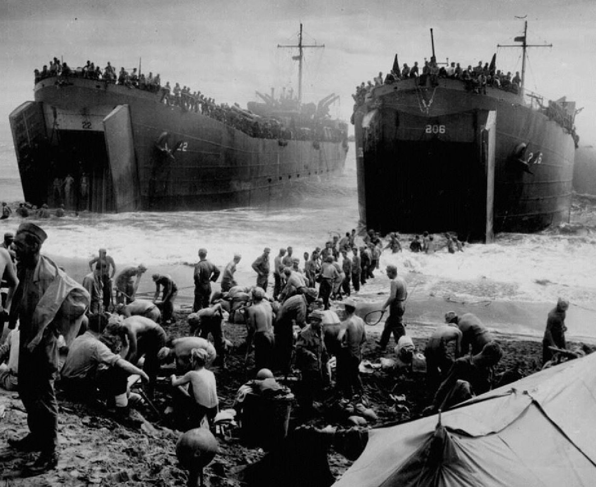
Les Anglo-Saxons ne nous ont jamais considérés comme des alliés.
De Gaulle refusait de célébrer le débarquement anglo-américain en Normandie. Ce fameux 6 juin (sixième jour du sixième mois du sixième an de la Guerre…) était considéré par lui comme une occupation à venir de l'Europe et une mise à l'écart de la France du fait de ses élites collaboratrices. La bourgeoisie française aux ordres de l'étranger, comme dit un jour Jean-Pierre Chevènement dans un discours inspiré, changerait simplement de patron. D'allemand, il devenait américain. Aujourd'hui il est les deux...
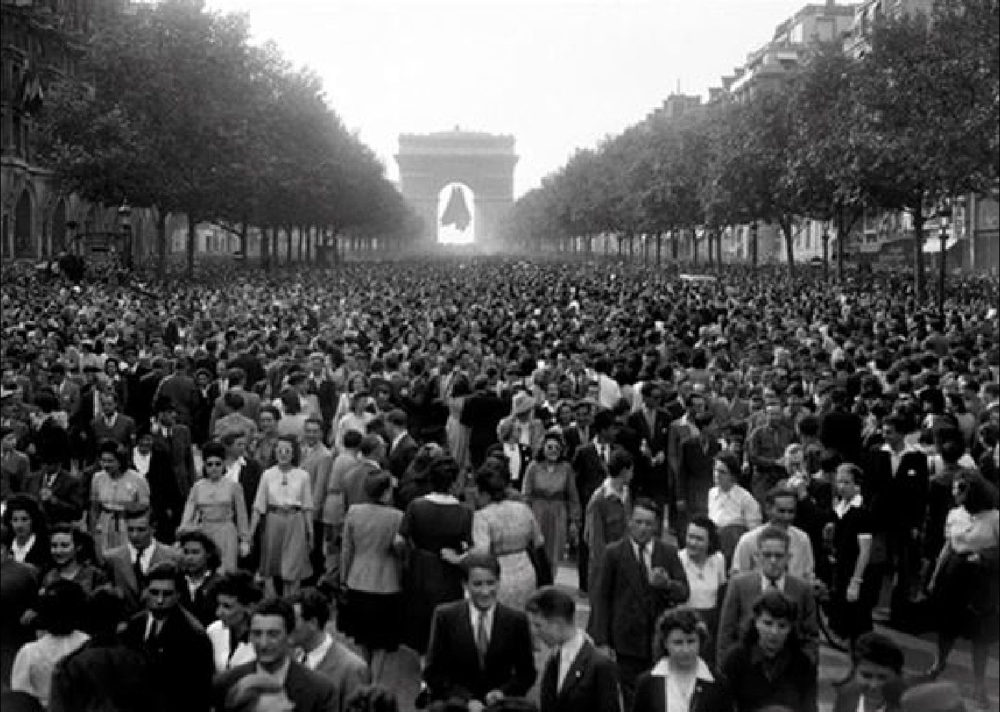
Pour un Français, le 8 Mai marque la fin d’un cauchemar national, celui de l’Occupation et de la Collaboration. Ce jour-là, le nazisme était vaincu, et avec lui une forme de totalitarisme doublement inhumaine par son mépris de la Raison et par les millions de vies sacrifiées à une idéologie absurde. Cette victoire fut obtenue par le courage britannique, la puissance américaine et l’alliance indispensable avec l’autre totalitarisme tout aussi inhumain, bien qu’apparemment moins irrationnel, du communisme...
Le « Poppy Day » est l'autre nom du "Remembrance Day" (Jour du Souvenir) dans les pays du Commonwealth. Comme nous, les Anglais commémorent l'Armistice de 1918 mais aussi le souvenir de tous les soldats morts au combat tout en rendant hommage aux anciens combattants qui ont participé aux grands conflits des XXe et XXIe siècle (les deux guerres mondiales, l'Irak, l'Afghanistan…). La « 11e heure du 11e jour du 11e mois » représente à l'évidence beaucoup plus qu'en France où, à mesure que les Poilus s'éteignaient les uns après les autres, cette commémoration devenait peu à peu un jour férié comme un autre, juste synonyme de « grasse mat… », dans le meilleur des cas...
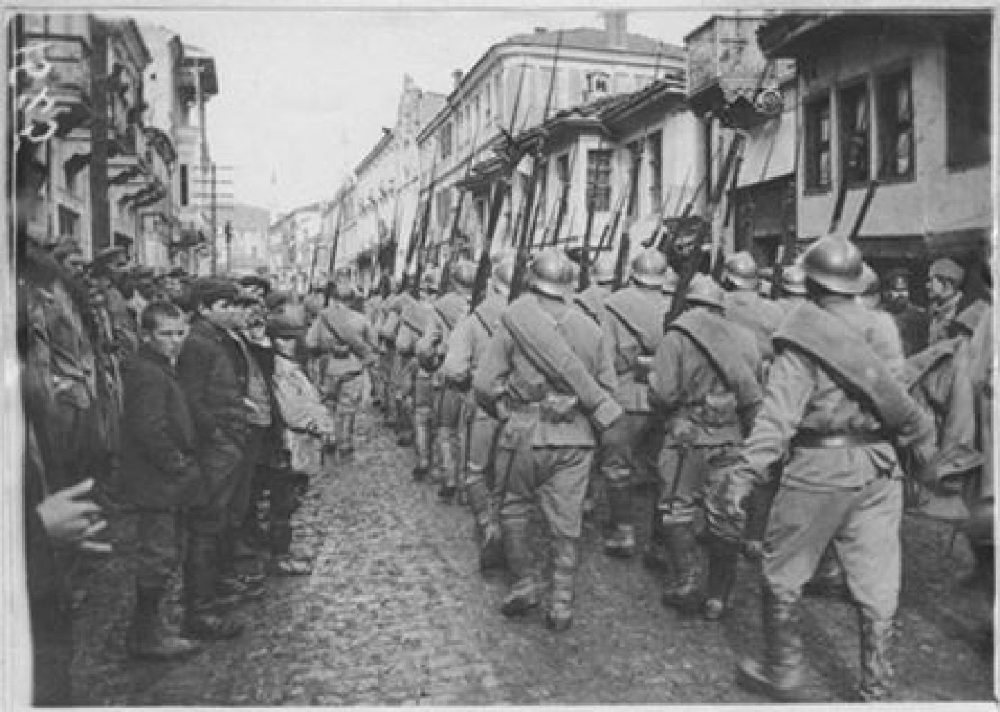
Sur le front de la Somme, le mois de novembre 1916 débute sous la pluie et rend difficile les opérations au sol et aériennes. Seule l’artillerie ponctue les premières heures de cette 823ème journée de guerre… Mais bientôt le ciel se dégage et les combats reprennent bien vite de leur intensité...
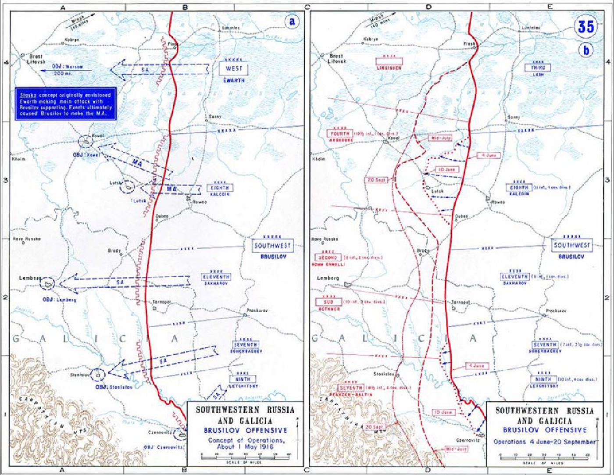
La plus grande opération de la guerre
Alors que l’historiographie de la Grande Guerre se focalise sur le front occidental, il nous apparaît comme essentiel de présenter le front oriental à l’occasion du centenaire de l’offensive « Broussilov ». Considérée par les historiens comme la plus importante opération de la guerre, son étude nous permet de mieux comprendre le rôle déterminant joué par la Russie dans la victoire de l’Entente et de souligner l’apport majeur de cette opération dans l’évolution de l’art de la guerre...
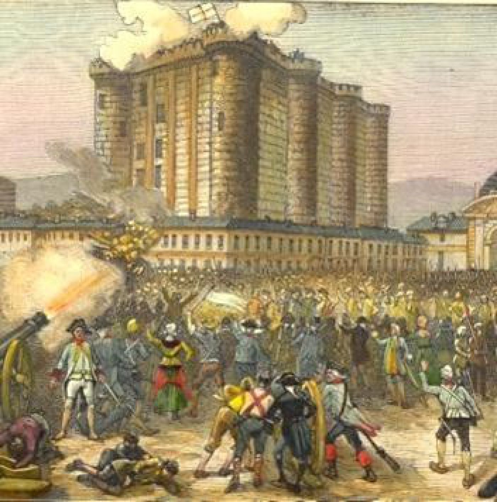
Le 4 Août 1789 est certainement une des dates les plus importantes de la révolution française. Elle se situe à un moment où tout est encore possible. Certes, des violences spectaculaires ont déjà ébranlé la monarchie. La prise de la Bastille et l’absence de réaction royale sont récentes. De nombreux désordres se déroulent en province qui remettent en cause le système féodal, sa hiérarchie organique héritée de la tradition et ses privilèges. Leur abolition sera décrétée par la Constituante cette fameuse nuit-là. En quelques mois, l’échafaudage complexe des ordres, des corporations, des communes et des provinces sera aboli au profit d’un système répondant aux principes de liberté et d’égalité...
Parlons de mai 68. Comme disait le philosophe libertarien Murray Rothbard (aux antipodes des néocons et de leurs relais médiatiques), « on appelle conspirative l’histoire qui n’est pas rédigée par l’autorité étatique officielle » et ses rédacteurs orwelliens. Cette citation importante met en relief le fait que l'histoire officielle (celle qu'on enseigne à l'école) est en elle-même une conspiration destinée à couvrir les crimes et les méfaits de nos élites privées ou bureaucratiques, et ce quelles que soient les prétentions des fonctionnaires qui l'enseignent ; Nietzsche en parle déjà dans la deuxième considération...
« Une arsouille » : c’est peut-être le mot de de Gaulle le plus connu pour qualifier François Mitterrand. Il le prononce le 24 novembre 1965 quand, à la veille de l’élection présidentielle, Roger Frey, ministre de l’Intérieur, lui propose de sortir le « dossier » de son adversaire1 et d’évoquer notamment ses liens particuliers avec René Bousquet, secrétaire général de la police de Vichy2, et son attribution de la francisque3...
Le développement de l'industrie dans le bassin du Donetz n’a pas été influencé que par les seuls Britanniques. En effet, l’industrie dans le Sud de la Russie a été fortement influencée par des gestionnaires et ingénieurs, citoyens des capitales françaises et belges. Nous allons vous parler de deux Français qui ont laissé leurs traces dans l'histoire moderne de Makeyevka...
Les vols transatlantiques ou transpolaires sont devenus banals mais qui se souvient, qu’au début du siècle dernier, ce type de vol relevait de l’exploit ou de la fantaisie. Ainsi, le « Petit Journal » du 30 octobre 1910, s’interrogeait : « Sera-t-il un jour possible d'aller d'Europe en Amérique en aéroplane ?»...
Déjà 792 jours de guerre… Les batailles de Verdun et de la Somme se font plus meurtrières que jamais.
Du lundi 2 octobre au dimanche 8 octobre 1916
Sur les fronts belge et français
Dans la région de Dixmude et sur l’Yser, au sud de cette ville, se sont déroulés des duels d'artillerie; la lutte entre les batteries de campagne et de tranchées a été vive vers Steenstraete et Boesinghe...
L'analyse d'une situation politique, géopolitique contemporaine ne peut s'effectuer que sur une analyse historique précédente très approfondie. Le théorème que je développe est le suivant: « Pour expliquer une situation politique, géopolitique à un instant contemporain B, il faut au préalable faire débuter l'étude sur un point A qui se situe dans le passé puis remonter au point B en analysant l'ensemble du cheminement historique qui aboutit à ce point »...
Le conflit entre dans 762ème jour tandis que, ce 1er septembre, l'offensive anglo-française, entravée par le mauvais temps, continue sur les deux rives de la Somme...
« Les muscles et les nerfs du Royaume sont le Peuple »
Jean Alexandre Buchon (1791-1846)
L’organisation NS-Gemeinschaft Kraft durch Freude (La Force par la Joie) avait été fondée en novembre 1933 dans le cadre du Deutsche Arbeitsfront (front allemand du travail) pour encadrer les ouvriers allemands dans leurs loisirs...
En 1943, pour les trois grands alliés, la Grande Bretagne, les Etats-Unis et l’Union Soviétique, la France est sortie de l’Histoire.
« Il n'est pas un bon Français qui n'acclame la victoire de la Russie. »
On connaît la russophilie du Général de Gaulle. Mais rien ne vaut les discours du Grand Homme pour retrouver la lettre et l'esprit du combat russophile initié en France par les Lumières aux temps de la Grande Catherine, et poursuivi ensuite par un Chateaubriand aux temps des tsars Alexandre et Nicolas...
De Gaulle n’avait rien d’un xénophobe ou d’un raciste et sa politique de décolonisation l’illustre sans peine. En 1943, il avait ainsi créé un collège électoral unique en Algérie afin que le vote des Arabes pèse autant que celui des Pieds-Noirs, tout comme il avait obtenu que soit augmentée la proportion de Français musulmans dans les diverses Assemblées traitant des intérêts locaux...
Le samedi 1er juillet 1916, à 7h30 de ce 701ème jour de guerre, le temps est au beau. Des coups de sifflet ordonnent à 120.000 soldats britanniques et du Commonwealth, des volontaires essentiellement, de sortir de leurs tranchées pour avancer en direction des lignes allemandes ; débute une gigantesque offensive anglo-française sur la Somme, la plus insensée et la plus sanglante de toutes les batailles de la Grande Guerre de 1914-1918. Son souvenir demeure très vif chez les Britanniques, dont toute une génération de jeunes soldats a été fauchée sur la Somme...
A la fin de 1914, la Turquie, dirigée par les Jeunes Turcs, entre dans la Grande Guerre alliée à l'Allemagne. Par le jeu des alliances, elle est en guerre contre la France...
Un siècle après, la responsabilité du déclanchement de la Première Guerre Mondiale est encore une question dont débattent les historiens...
Trop souvent oublié des livres d’Histoire français, le corps expéditionnaire russe débarqué en France en 1916 est pourtant représentatif de l’importance de l’alliance franco-russe mise en place au tournant du 20e siècle pour barrer la route aux menaces pangermanistes en Europe. Retour sur l’histoire de ces hommes qui ont traversé la moitié du globe pour venir combattre en France...
Les opérations de guerre, prises dans leur ensemble, ne sont pas en apparence aussi satisfaisantes pour les armées de l'Entente que pendant les semaines précédentes. En ce 667ème jour de guerre et après cent jours de bataille à Verdun, la lutte gigantesque dans laquelle se trouvent engagées en avant de Verdun les armées allemandes et françaises revêt un caractère d'une violence inimaginable.
Solid color intro with an image on the right side. Also this block has no paddings...
Le traité de 1963 relatif à la coopération franco-allemande intensifia également la coopération des armées des deux pays...
« Notre âme ne peut pas mourir, La liberté ne meurt jamais. » (Taras Chevtchenko1, poète ukrainien)
Du point de vue linguistique, une langue représente la totalité des dialectes qui subissent les mêmes événements linguistiques (changements ou innovations linguistiques). Le prince Nikolaï Troubetzkoï2 a démontré que, de ce point de vue, on peut parler d’une unité linguistique du slave commun jusqu’au XIVe siècle, car, jusqu’à cette époque, des phénomènes linguistiques communs influent sur les « parlés » des gens qui peuplent une certaine zone géographique dont la répartition fait encore débat en ce début de XXIe siècle.
Il y a, au XVe siècle, un certain paradoxe car il y a à cette époque déjà différentes langues slaves, et il ne s’agit pas seulement de dialectes du slave commun. Cela signifie que, quoique la langue slave commune existe encore, on trouve dans son aire de diffusion non seulement des dialectes, mais également des langues, avec des frontières linguistiques relativement fermées...
On peut être surpris de la lecture paradoxale de l’histoire faite par les médias occidentaux. Ainsi cette presse, notamment française, toujours si enclin à trouver le fasciste en tout citoyen de la droite nationale et populaire se veut bien silencieuse face aux milices néo-nazies qui sévissent ouvertement en Ukraine...
Les achats ou les locations de terres arables un peu partout dans le monde par des pays qui ne disposent pas toujours de ce type de ressources en quantité suffisante ont un impact dont on ne mesure pas, toujours, la portée.
En 2014, Agnès STIENNE, se définissant comme artiste et cartographe, avait, ainsi, réalisé quelques cartes1 qui montrait l’ampleur de ce phénomène qui commence à inquiéter certains milieux...
La guerre entre dans son 639ème quand le mois de mai débute. Si l'on excepte Verdun, le front britannique est actuellement plus actif que le front français : l'ennemi n'a d'ailleurs pris l'offensive que sur quelques parties de ce vaste front, en Artois ; en Picardie, au contraire, ce sont les troupes britanniques qui ont l'initiative de l'attaque...
Le Donbass est une région unique dans beaucoup de sens...
Le mois de mars 1916 débute en ce 609ème jour de guerre et la solidité du front au nord de Verdun, depuis si longtemps balayé par la rafale, n'a pas diminué.
Du lundi 3 avril 1916 au dimanche 9 avril 1916
Sur les fronts Belge et Français
Les Allemands font des préparatifs en vue d'une forte attaque sur le front belge : des canons de campagne sont envoyés d'Ostende et des défenses, tout le long de la côte, sont fortement renforcées; le nombre des hôpitaux préparés est triplé....
Etat des lieux
Pour remplir sa mission il faut à Jörg Schönbohm un centre de commandement pour y installer son état-major. Le 4 Octobre, 1990 on créa le Bundeswehr Kommando Ost...
Le mois de mars 1916 débute en ce 578ème jour de guerre et les combats engagés dans le secteur de Verdun, quelques jours plus tôt, continuent de s’intensifier…
La NVA en pleine transition démocratique
L’armée est-allemande était réputée comme une armée redoutable car ces équipements et son niveau d’engagement opérationnel étaient jugés comme particulièrement performants et inquiétants par les spécialistes et hauts responsables de l’OTAN...
L’annulation du droit de servage dans l’Empire Russe, en 1861, provoqua la nécessité de réaliser un ensemble de réformes. Le 1 janvier 1864 fut publié « Règlement sur des institutions provinciales et locales de zemstvo », qui établit les organes électifs des collectivités relevant de tout ordre – les zemstvos...
La NVA1, pilier du pacte de Varsovie2
« L’expérience apprend que le moment le plus dangereux pour un mauvais gouvernement et d’ordinaire celui où il commence à se réformer » Tocqueville...
Mardi 1er février 1916, le monde entre dans son 549ème jour de guerre…
Le mois de février 1916 sera celui de la bataille la plus meurtrière de la première Guerre Mondiale: Verdun. Un enfer qui durera dix mois et fera plus de 300 000 morts et 500 000 blessés. Par l’ampleur des victimes et l’atrocité de cette guerre de tranchées, la bataille de Verdun est entrée dans la mémoire collective de la France et figure comme une des événements marquants de la Grande Guerre...
Dans l'historiographie du Donbass et vis-à-vis de certaines régions il demeure des polémiques qui prennent leur origine depuis la naissance de la science moderne au XIXème siècle. Bien que la plupart des questions problématiques de l’histoire aient trouvé leurs explications, par l’analyse de nouvelles sources historiques, des légendes demeurent...
Il y a un siècle, l’Europe entière et une grande partie du monde était à feu et à sang dans ce qui reste, à ce jour, réduit aux termes de « La Der des Der » ou de « La Grande Boucherie »...
Il y a longtemps que le terme « Steppes sauvages » utilisé dans la littérature historique est entré dans l’usage et est devenu habituel, en remplaçant une vaste période de l’histoire des steppes de Donetsk. Ces derniers temps il a pris une signification politique car certains auteurs forts des informations des sources médiévales des XV-XVIe siècles indiquent qu’ici se trouva un vaste territoire dépeuplé – les « Steppes sauvages » - et l’histoire civilisée de la région ne commence qu’au XVII siècle...
L’intensité et la diversité de la coopération entre la France et l’Allemagne sont sans pareille dans le monde, tant d’un point de vue politique, que commercial, éducatif ou culturel...
Auguste Montaudon (ou Monthodon) peut légitimement apparaître comme un illustre inconnu. Pourtant, cet homme qui va se distinguer durant les combats de la Grande Guerre et va être cité à l’ordre de la Division pour son mépris du danger, est mon trisaïeul par mon père. En cette période de commémoration de la Première Guerre mondiale, il m’est apparu utile de retracer la vie de cet homme exceptionnel...
Il y a quelques mois, Nikolaï Maksimovitch Vasenin, décédait. Ancien combattant de l’Armée Rouge durant la Seconde guerre mondiale, il était également un des rares soldats russes à avoir été honoré de la croix de chevalier de la Légion d’Honneur, la plus haute distinction française, pour sa participation active à la Résistance française au nazisme...
Le général de Gaulle a toujours été considéré comme un ami proche de la Russie. Il a d’abord impressionné par son courage pendant la guerre. Alors que la France semblait écrasée sous la botte ennemie, il s’est dressé en géant, tel le héros de la mythologie russe Ilya Mouromets, contre le colosse hitlérien avec une poignée de compagnons téméraires...
REVUE MÉTHODE
http://revuemethode.org
Partager cette page